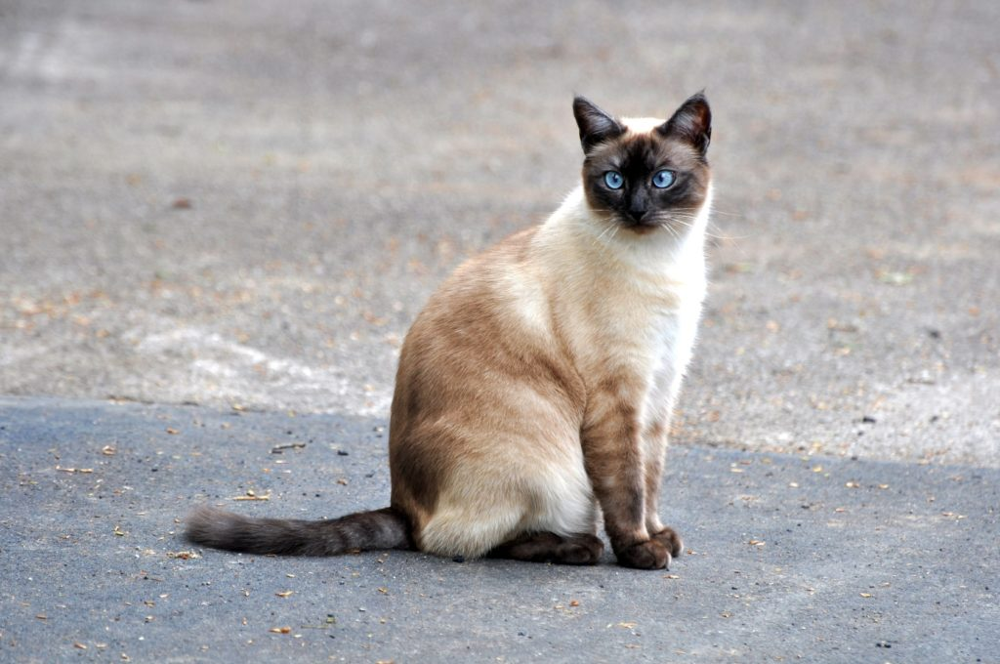

A macskák sportos alkatúak, testük gyors, intenzív tevékenységekre alkalmas, így ideális a ragadozó életmódhoz. Jó futók, rövidtávon képesek elérni az akár 50 km/h-s sebességet is. Ízületeik hajlékonyak, hosszú lábaikkal, rugalmas erős izmaikkal remekül ugranak, képesek függőlegesen felfelé a kerítésekre vagy falakra akár két méter magasságba is felugrani, álló helyzetből. Emellett igen jó az egyensúlyérzékük (egyensúlyuk megtartását hosszú hajlékony farkuk is segíti), reflexeik gyorsak.

A sziámi macska a perzsa macska mellett az egyik legrégebbi és legismertebb macskafajta. A fajta eredete egy széles körben elterjedt mutációra vezethető vissza, ami több, mint 500 éve jelentkezett és Ázsiából, méghozzá Sziámból, a mai Tájföldről indult ki. A sziámi cicák első példányai a XIX. század végén kerültek el a nyugati országokba, főleg királyi udvarokban tartották őket egzotikus státuszszimbólumként.
